Overview
As Moore's law fades into irrelevancy, alternative solutions to computing become increasingly necessary. Following the work done by Darian Brokaw, my contribution was to:
1. Implement NOT, NOR, & NAND logic gates into a GDSII layout using KLayout
2. Recreate said logic gates from scratch, but in Python (using Tidy3D library), for portable and repeatable results.
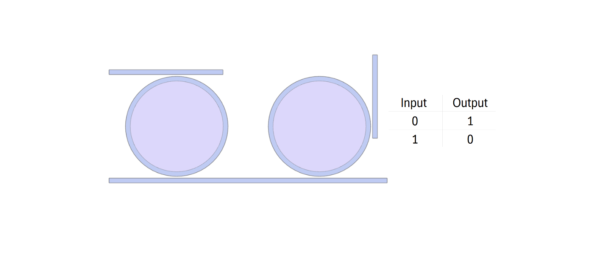
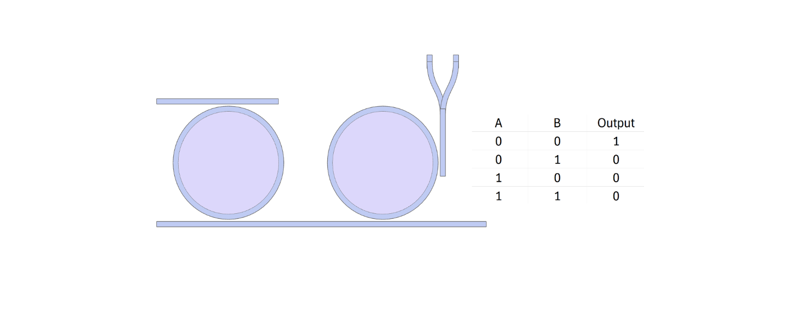
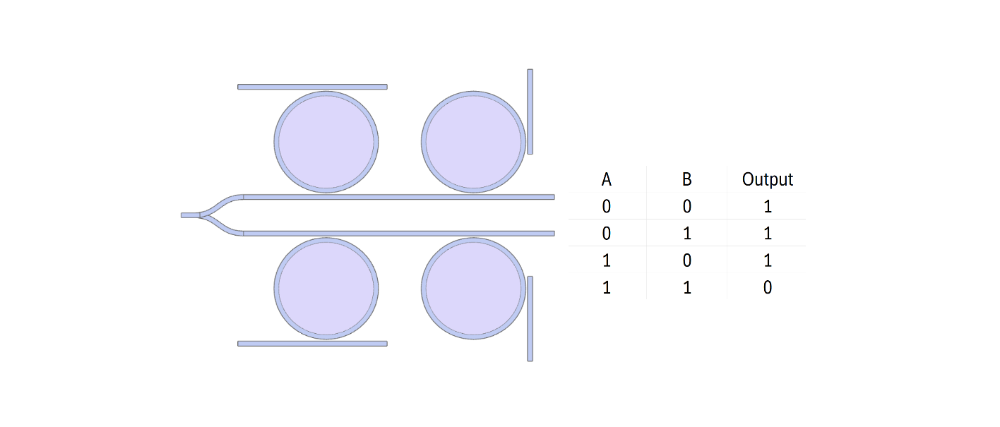
Background
CMOS (Complementary Metal Oxide Semiconductor) devices still serve as the primary technology for the computing industry. They have many advantages, including a strongly established manufacturing infrastructure which we seek to take advantage of. As these devices become more and more difficult to shrink, and as diminishing returns become more & more apparent, alternatives must be explored.
One such alternative is the use of photonics (light), rather than electrics, as the operating medium by which logical operations are performed. While current implementations do exist, they are limited in several ways we seek to improve upon. Namely, the need for active tuning in the form of heat or voltage controls, and the lack of cascadability. As such, the goal was to create all-optical logic gates that would solve these issues as well being derived from microring resonators.
Design & Method
The basic principle of operation of the inverter is destructive interference, in which the light coupled to the bottom drop port becomes out of phase and inverts the input signal (coming from vertical waveguide). In this way, we create an all-optical inverter.
This can be justified with standard microring transfer-function theory + coupled-mode theory (CMT), and subsequently interpreting the device as an optical comparator whose output flips when the effective detuning crosses a threshold.
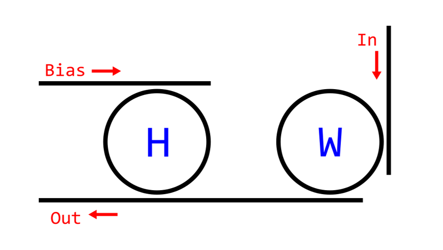
The schematic above demonstrates the operation principle. The input waveguide labeled "Bias" is always on, and serves as an analogue to a VDD in a MOSFET design. The input source labeled "In" is the primary input which can be toggled on and off. In the OFF state, the W ring (which is always on resonance) couples to the drop port (labeled "out") providing a high through transmission. In the ON state, the W ring is on resonance, affecting the W rings effective response which results a low through transmission on the drop port. In this way, we create a sharp function of detuning in which:
- Input “1” → W-ring ON resonance (LOW through transmission).
- Input “0” → W-ring OFF resonance (HIGH through transmission).
Thus creating a photonic logical inverter. With this scheme, we are also able to create higher level functions:
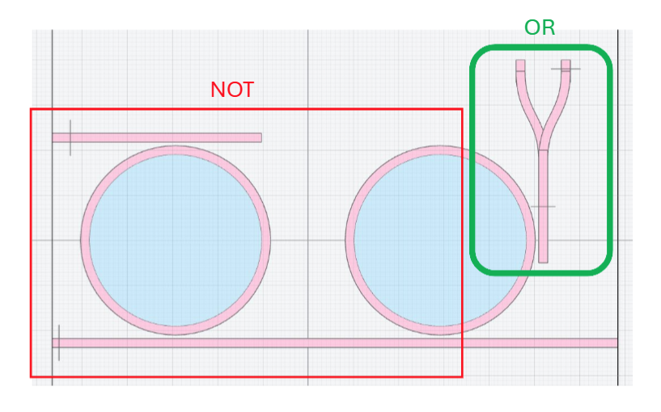
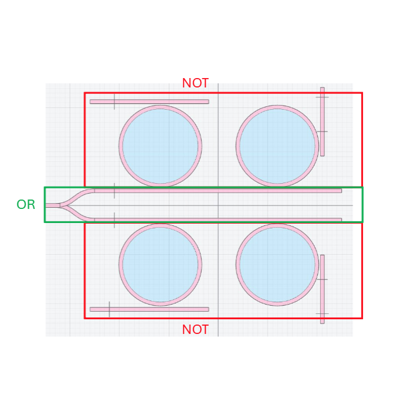
By approximating an "OR" gate with a Y-branch waveguide, we are able to construct a NOR & a NAND gate with the inverter. The boolean expression for these gates in this scheme is as follows:
- NOT(OR(A, B)) = NOR(A,B)
- OR(NOT(A), NOT(B)) = NAND(A,B)
Essentially "NOTing the OR" & "ORing the NOT", as it were.
Results
Simulation results (Conducted within Tidy3D) verify the boolean expressions for each gate.
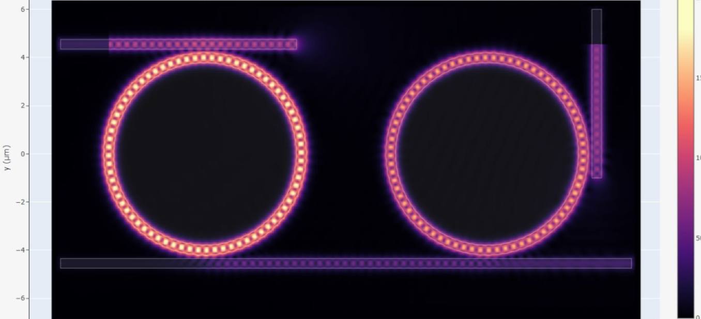
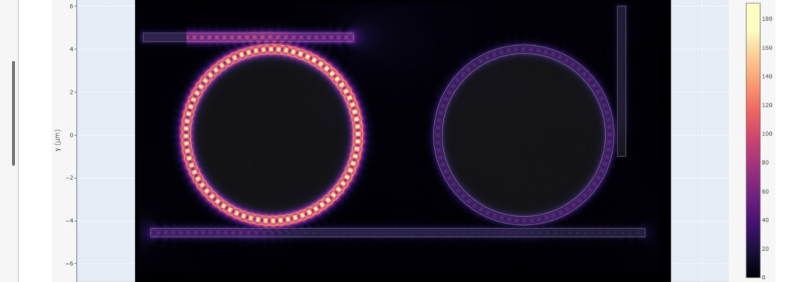
Viewing the E-field intensity allows us to visualize the logic inversion, in which the input signal (vertical waveguide) is inverted when measuring from the left side of of the bottom drop waveguide. In the Input = 1 case, we see a low field intensity as displayed by the heatmap, effectively being logic '0'. When Input = 0, we see a higher intensity logic '1'.
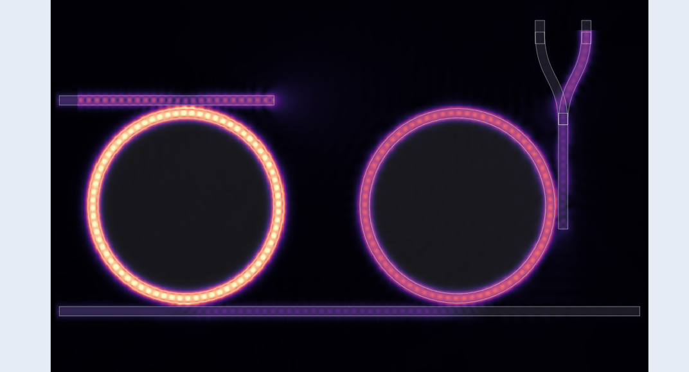
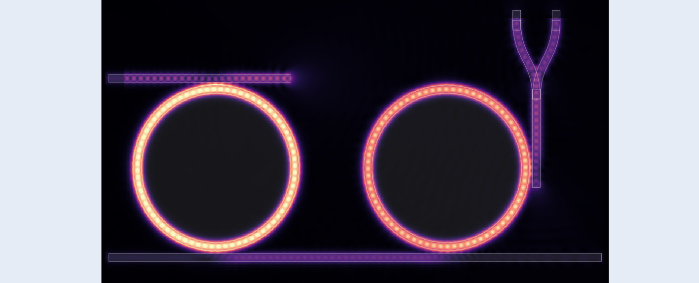
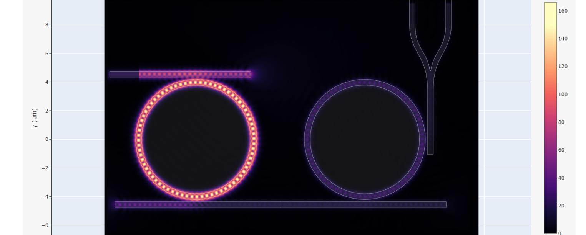
Viewing the E-field intensity for the NOR gate reveals the proper output as well. In any case where input A or B equals '1', we observe a '0' output on the drop port. Similar to the NOT gate, we observe a '1' or high drop port transmission when no input '1' exists, in this case with inputs A and B.
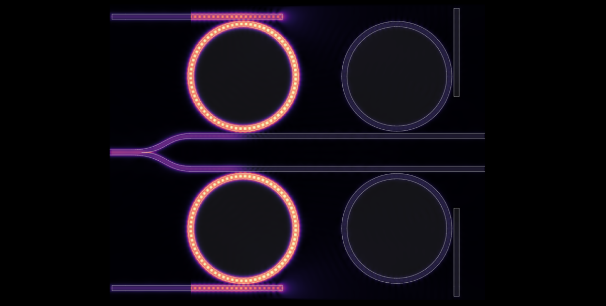
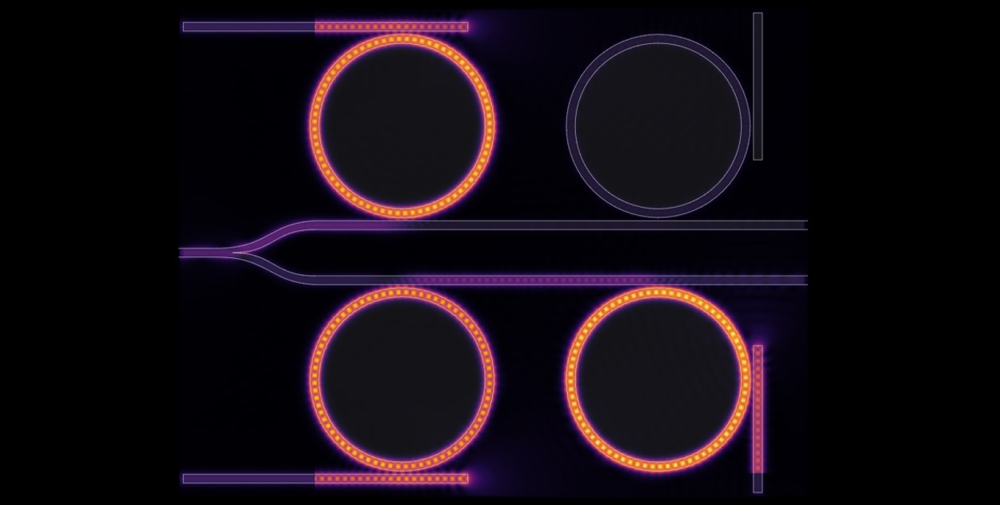
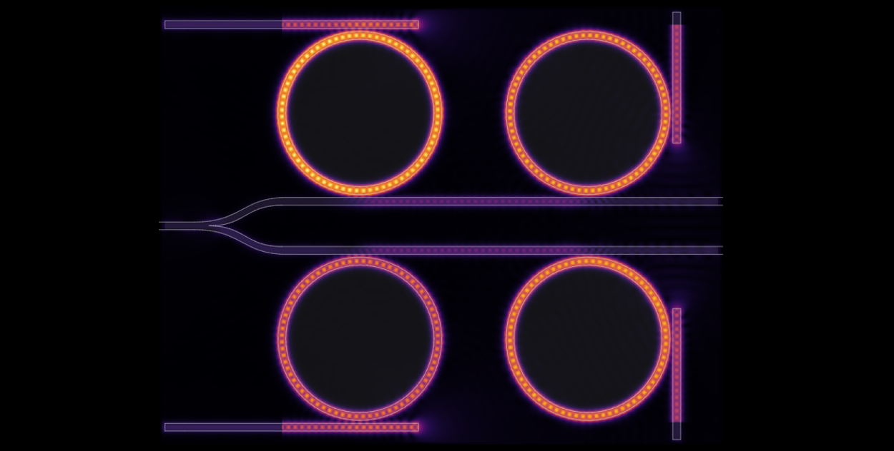
NAND gates results demonstrate the expected output as well. Only when both inputs are '1' will the output be '0'. Any case in which A or B equals '0', we will observe a high drop port transmission '1'.
Next Steps
While NAND & NOR serve as universal gates, thereby making any boolean expression possible, the issue of scale and footprint still exists. If a logic gate (Such as XOR) can be constructed in the same manner as our NAND & NOR, this would be more efficient than stringing multiple of either of those two universal gates together. Future work, then, is exploring the design gates such as OR, AND, and XOR in the pursuit of an all-optical ALU. Additionally, a majority gate is being investigated through the modification of the NOR gate, to create another universal gate option.